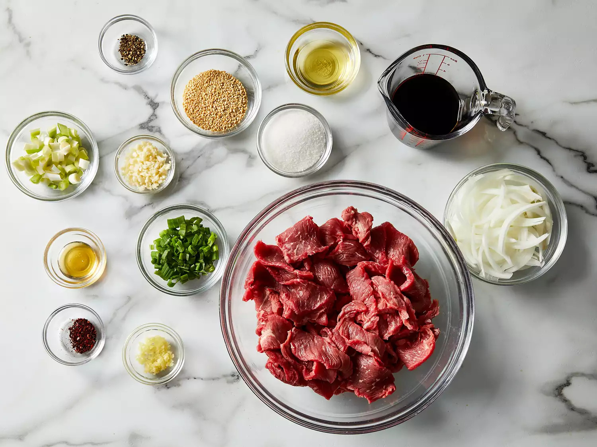

Easy Bulgogi (Korean BBQ Beef)
Bulgogi, or Korean barbecued beef, is made with marinated sliced beef. Most recipes call for crushed pear to tenderize the meat. My boyfriend's Korean mother says Coca-Cola can also be used for the same purpose. This recipe uses very thinly-sliced sirloin steak, so tenderization isn't necessary. It's delicious served with rice, lettuce leaves, and chile paste or kimchi.
Ingredients
- 1 pound thinly-sliced beef sirloin steak
- 5 tablespoons soy sauce
- 2 ½ tablespoons white sugar
- ¼ cup chopped green onion
- 2 tablespoons minced garlic
- 2 tablespoons sesame seeds
- 2 tablespoons sesame oil
- ½ teaspoon ground black pepper
Step 1: Prepare the Marinade

Place the sliced beef in a large bowl. In a separate bowl, combine soy sauce, sugar, green onion, garlic, sesame seeds, sesame oil, and ground black pepper.
Tip: Make sure to mix the marinade ingredients thoroughly to ensure the sugar is fully dissolved.
Nutrition Facts
Per Serving:
- Calories: 294
- Protein: 25g
- Carbohydrates: 13g
- Fat: 16g
- Saturated Fat: 5g
- Cholesterol: 68mg
- Sodium: 1214mg
- Potassium: 457mg
- Fiber: 1g
- Sugar: 10g
- Vitamin C: 3mg
- Calcium: 57mg
- Iron: 3mg